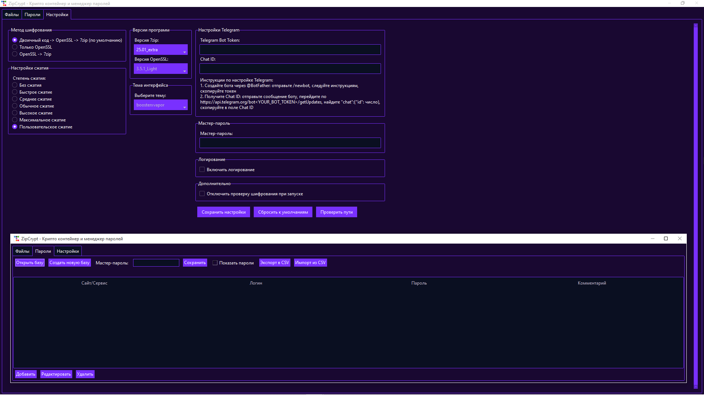

О программе
ZipCrypt — это мощное приложение для шифрования файлов и управления паролями, разработанное на Python с использованием ttkbootstrap. Обеспечивает безопасность и удобство в одном решении.
Возможности
Шифрование файлов
- Выбор файлов или папок для шифрования
- Несколько методов шифрования
- Подробное логирование процесса
- Поддержка различных версий 7zip и OpenSSL
Менеджер паролей
- Создание и управление базами паролей
- Импорт/экспорт в CSV формат
- Копирование паролей в буфер обмена
- Шифрование баз паролей
Настройки
- Выбор метода шифрования
- Настройка степени сжатия
- Выбор версий программ
- Настройка Telegram токена
- Мастер-пароль для автоматической расшифровки
Установка
Требования
- Python 3.7+
- 7zip (размещен в папке 7zip/)
- OpenSSL (размещен в папке OpenSSL/)
Установка зависимостей
pip install -r requirements.txtСтруктура папок
ZipCrypt/
├── 7zip/
│ ├── 7zip_25.01_extra/
│ │ └── 7za.exe
│ ├── 7zip_24.08/
│ │ └── 7za.exe
│ └── 7zip_9.20/
│ └── 7za.exe
├── OpenSSL/
│ ├── OpenSSL_3.2.4/
│ │ └── openssl.exe
│ ├── OpenSSL_3.5.1/
│ │ └── openssl.exe
│ └── OpenSSL_3.5.1_Light/
│ └── openssl.exe
├── main.py
├── utils.py
├── crypto_engines.py
├── files_tab.py
├── password_manager.py
├── settings.py
├── requirements.txt
└── README.md
Использование
Вкладка "Файлы"
- Выбор файлов: Нажмите "Выбрать файл" или "Выбрать папку"
- Ввод пароля: Введите пароль для шифрования
- Шифрование: Нажмите "Зашифровать" и выберите место сохранения
- Расшифровка: Выберите зашифрованный файл, введите пароль и нажмите "Расшифровать"
Вкладка "Пароли"
- Создание базы: Нажмите "Создать базу"
- Добавление паролей: Нажмите "Добавить" для создания новой записи
- Сохранение: Введите мастер-пароль и нажмите "Сохранить"
- Импорт/Экспорт: Используйте кнопки для работы с CSV
Вкладка "Настройки"
- Метод шифрования: Выберите предпочитаемый метод
- Сжатие: Настройте степень сжатия
- Версии программ: Выберите версии 7zip и OpenSSL
- Telegram: Настройте токен для отправки файлов
- Мастер-пароль: Установите пароль для автоматической расшифровки
Методы шифрования
Двоичный код -> Base64 -> OpenSSL -> 7zip (по умолчанию)
- Пароль переводится в двоичный код
- Двоичный код шифруется через base64
- Файлы шифруются зашифрованным двоичным кодом через OpenSSL методом AES-256-CBC и PBKDF2, случайной последовательностью байтов
- Результат шифруются и архивируется через 7zip методом AES-256
Только OpenSSL
Прямое шифрование файлов через OpenSSL. Подходит для одиночных файлов.
OpenSSL -> 7zip
Файлы сначала шифруются через OpenSSL, затем архивируются через 7zip.
Безопасность
- Используется AES-256-CBC и PBKDF2 шифрование
- Пароли никогда не сохраняются в открытом виде (кроме мастер-пароля и логов)
- Все временные файлы автоматически удаляются
- Поддержка мастер-пароля для дополнительной защиты
Поддержка
При возникновении проблем:
- Проверьте наличие 7zip и OpenSSL в соответствующих папках
- Убедитесь в правильности путей в настройках
- Проверьте логи в файле zipcrypt.log
Лицензия
ZipCrypt распространяется под лицензией MIT